Cell
Personagens
aqui estão os personagens dessa obra e suas vozes
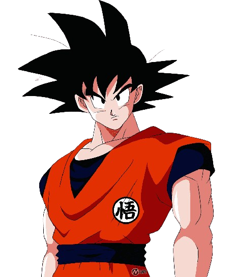
Goku
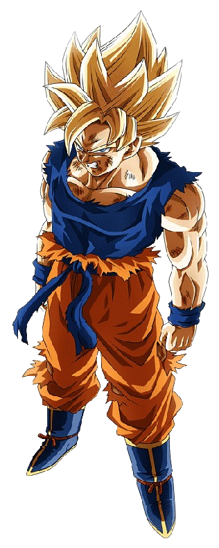
Com um poder assustador e uma inigualável força de vontade, superada apenas pela pureza de seu coração, Goku salvou a Terra incontáveis vezes, transformou inimigos mortais em grandes amigos e entrou no nosso coração para nunca mais sair, sendo um dos personagens mais amados e facilmente reconhecíveis do mundo.
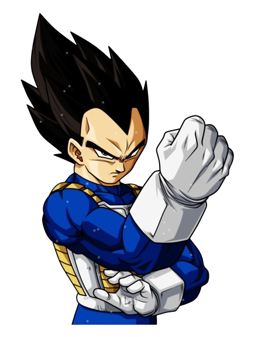
Vegeta
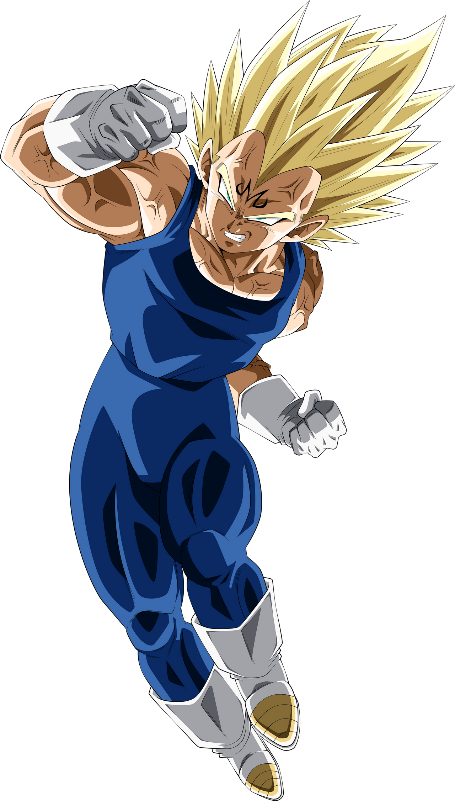
Quando Vegeta surge na série, é um personagem sádico, chegando ao ponto de destruir seu companheiro de longa data, Nappa, quando o mesmo não consegue derrotar Goku. Durante esse tempo, Vegeta demonstra um grande desejo por imortalidade e poder. A personalidade de Vegeta muda de assassino cruel para anti-herói vingativo.
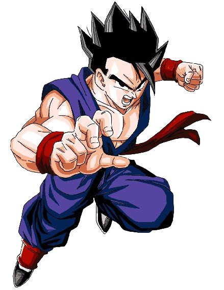
Gohan
Gohan é filho do protagonista Goku com sua esposa Chi-Chi e o primeiro híbrido entre humano e Saiyajin mostrado na série, seu nome é uma homenagem ao avô adotivo de seu pai, Son Gohan que foi aluno de Mestre Kame, assim como Goku. Um tema recorrente na série é o grande poder oculto de Gohan, que aos poucos é liberado.
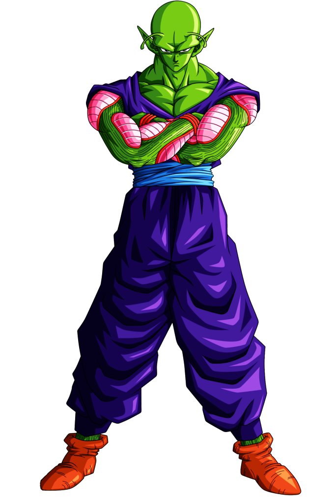
Piccolo
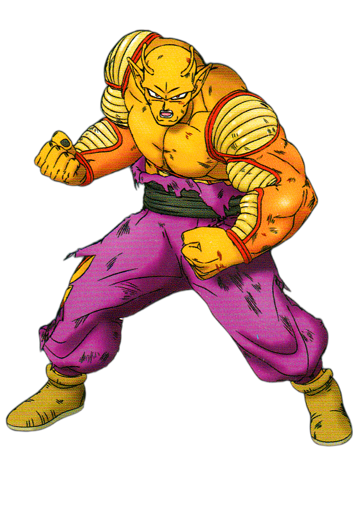
Piccolo é introduzido em Dragon Ball ainda na série clássica de Akira Toriyama, com Goku já adulto. Seu objetivo era se vingar e derrotar Goku para dominar o mundo.Mesmo que tenha aparecido como um antagonista que desejava o fim de Goku, sua personalidade foi se moldando aos pouco na medida em que ele foi demonstrando respeito pelos outros que estavam no campo de batalha
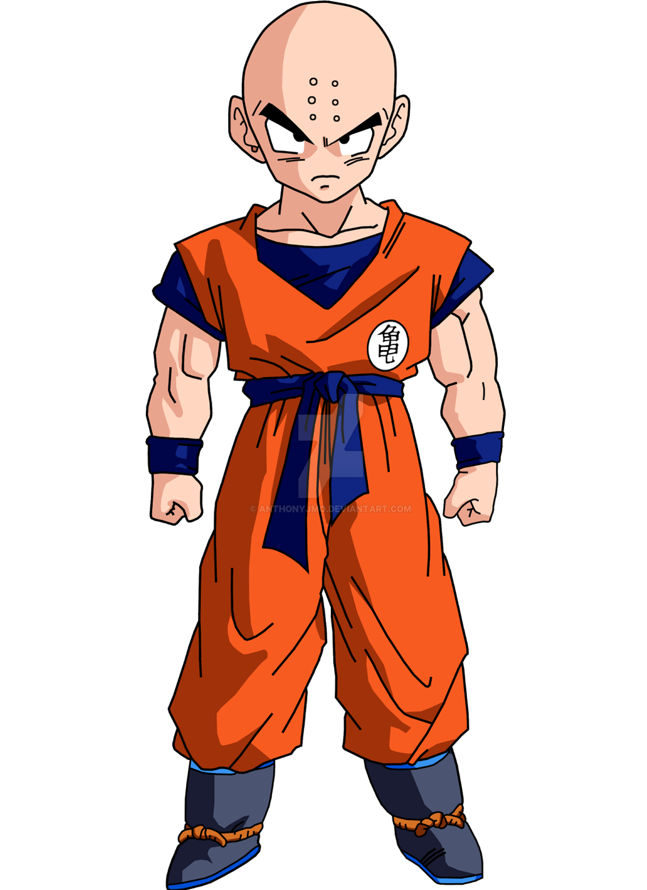
kuririn
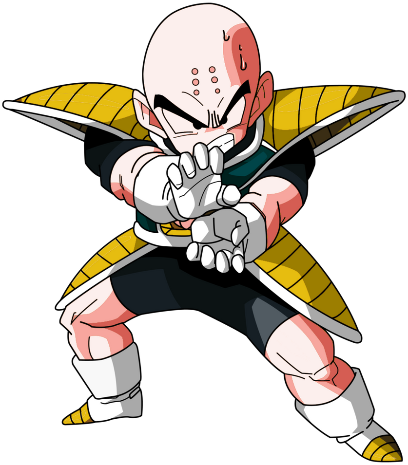
Nascido e crescido em um templo shaolin, Kuririn partiu para treinar com o renomado Mestre Kame aos treze anos. Chegando em sua ilha ele conheceu Goku e se autoproclamou seu rival. Contudo, ao longo de seis meses de treinamento, Kuririn passou a aceitá-lo e os dois se tornaram melhores amigos.
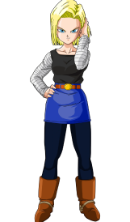
N 18
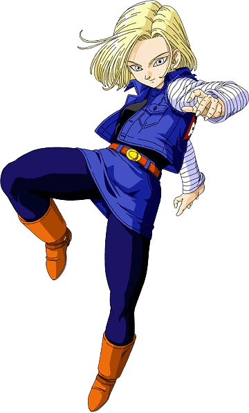
Ela é a décima oitava criação androide de Dr. Gero, designada para cumprir a vingança contra Goku. Enquanto seus interesses inicialmente desviam dessa expectativa, a curiosidade dela de ativar Androide 16, embora Gero havia ordenado não fazê-lo, leva Androide 17 a matá-lo.
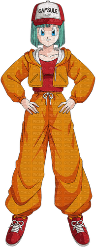
Bulma
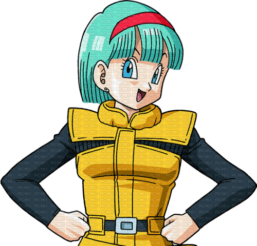
No início do enredo ela é uma adolescente que encontra uma esfera estranha e descobre que é uma das sete Esferas do Dragão, que podem realizar um desejo quando reunidas. Bulma então cria um radar que capta ondas que essas esferas emitem e sai em uma jornada pelo mundo para encontrá-las e pedir um namorado perfeito.
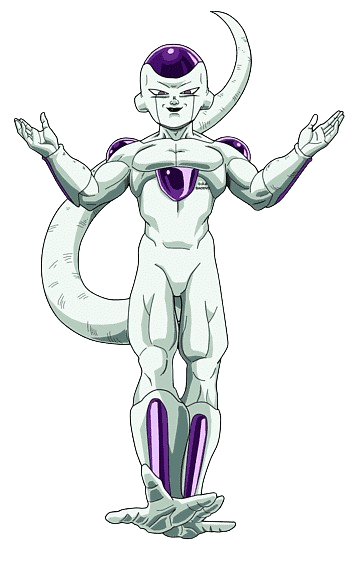
Freeza
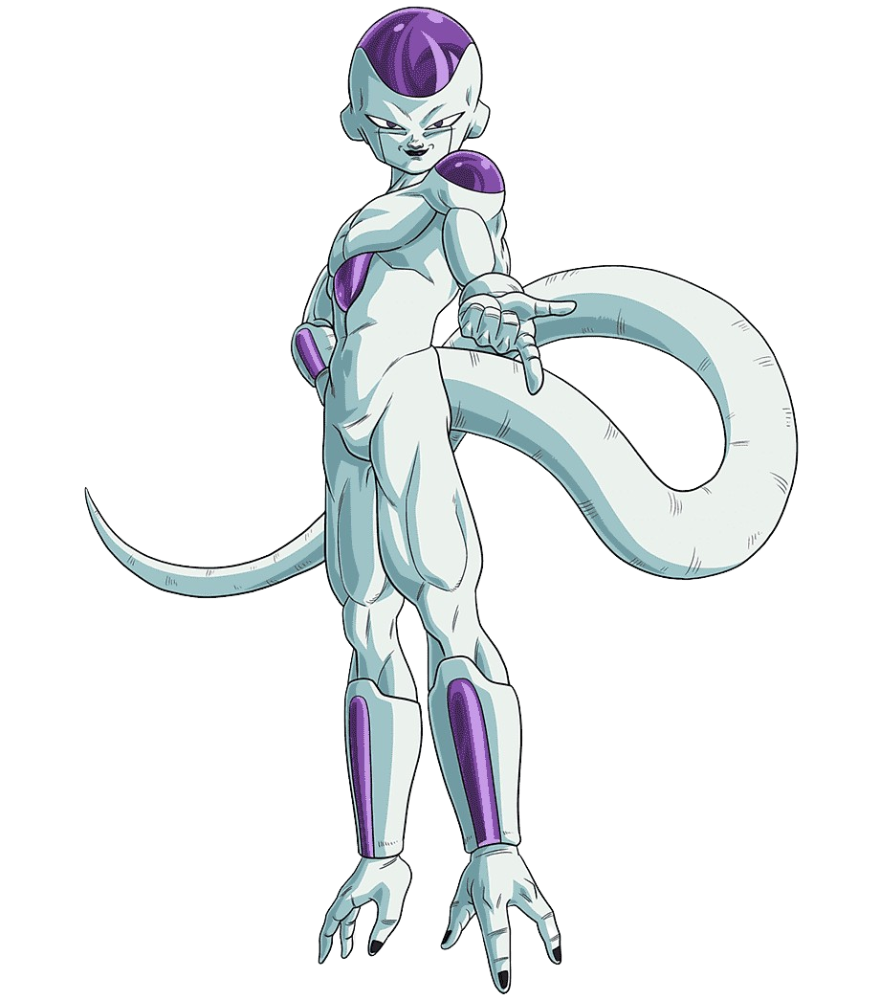
Freeza é o grande imperador do Universo. Filho do Rei Cold, no passado se aliou aos Saiyajins, que tinham derrotado os Tsufurujins e tomado conta do Planeta Vegeta (antes chamado de Plant), em suas conquistas pelo universo.
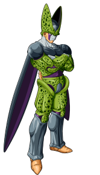
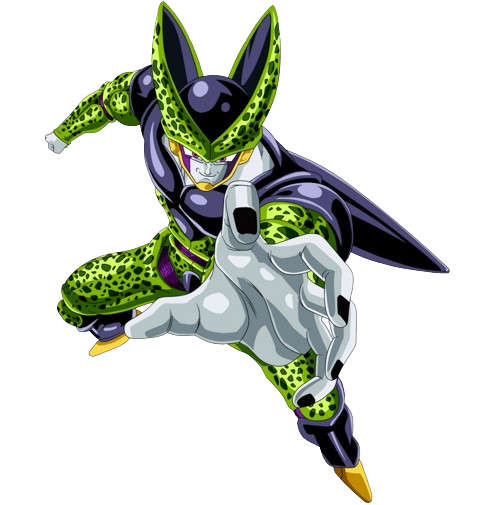
Cell é um Bio-androide criado a partir das células de diversos lutadores como dos Guerreiros Z, Freeza e Rei Cold. Durante a sua participação na série, Cell evolui várias vezes, pois pretende se tornar um ser perfeito e para isso, passa a absorver a energia vital de vários humanos, em especial a dos Androides 17 e 18.
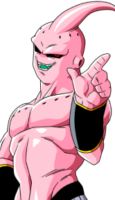
Majin boo
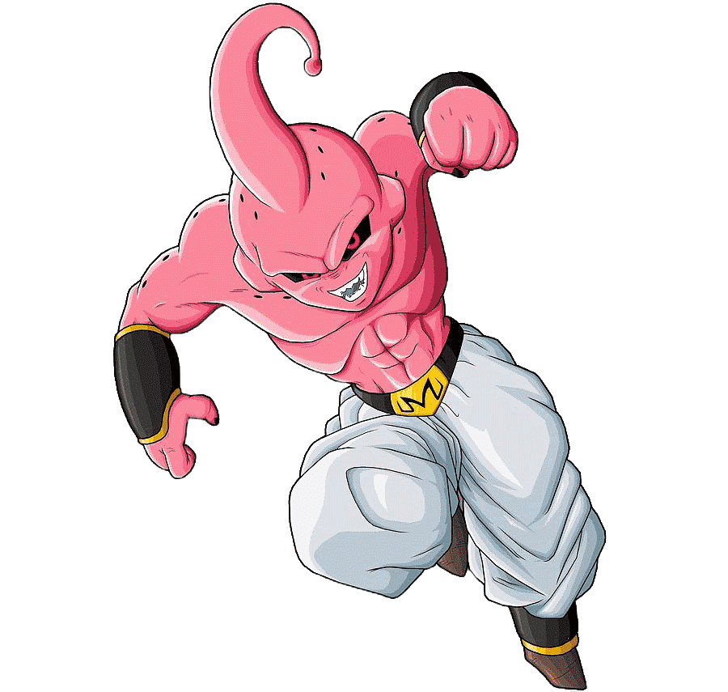
Majin Boo é um criatura mágica, membro da raça majin, criada pelo mago Bibidi para auxiliá-lo na dominação do universo. Conforme a série avança, Majin Boo expele sua maldade criando dois Majin Boo. O bom se une aos Guerreiros Z enquanto o mau é destruído por Goku e renasce como um garoto chamado Oob.